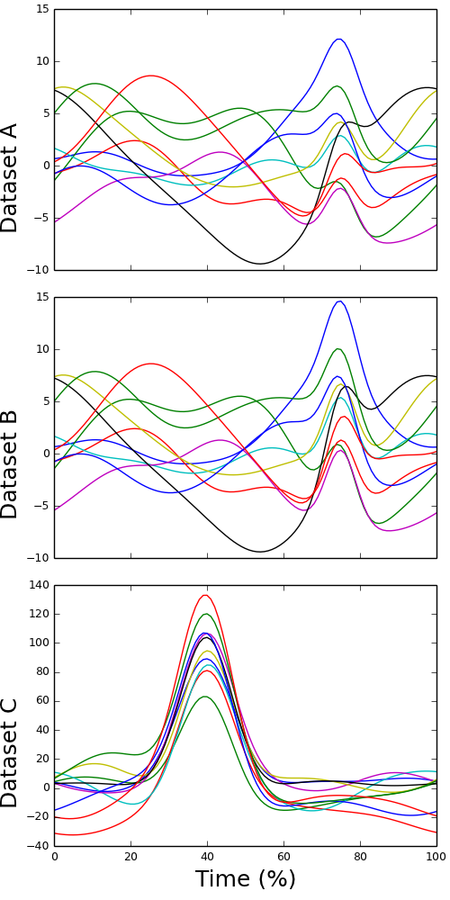

data1d¶
Simulated scalar datasets (#01)
Overview¶
These three datasets were generated to illustrate the basic concepts of random field theory-based statistical inference. Each dataset contains ten scalar 1D trajectories, each with 101 nodes.
- Datasets A and B represent one-sample (or paired) designs.
- Dataset C represents a regression design, with the following independent variable values: [50, 53.75, 57.5, 61.25, 65, 75, 78.75, 82.5, 86.25, 90]
Data¶
simscalar01.h5.zip(HDF5 format)simscalar01.csv.zip(CSV format)
Reference¶
Pataky TC, Vanrenterghem J, Robinson MA (2015). Zero- vs. one-dimensional, parametric vs. non-parametric, and confidence interval vs. hypothesis testing procedures in one-dimensional biomechanical trajectory analysis. Journal of Biomechanics, in press.
Loading and viewing the data (MATLAB)¶
>>> file_name = 'datasetA.h5';
>>> y = hdf5read(file_name, '/y');
>>> plot(y)
Loading and viewing the data (Python)¶
>>> import tables
>>> from matplotlib import pyplot
>>> file_name = 'datasetA.h5'
>>> file_id = tables.openFile(file_name, mode='r')
>>> y = file_id.getNode('/y').read()
>>> file_id.close()
>>> pyplot.plot(y.T)
>>> pyplot.show()
Data format¶
Please find information about the HDF5 format at: www.hdfgroup.org/HDF5
LICENSE¶
Copyright (c) 2014 Todd Colin Pataky, Jos Vanrenterghem, and Mark Robinson
Permission is hereby granted, free of charge, to any person obtaining a copy of this software and associated documentation files (the “Software”), to deal in the Software without restriction, including without limitation the rights to use, copy, modify, merge, publish, distribute, sublicense, and/or sell copies of the Software, and to permit persons to whom the Software is furnished to do so, subject to the following conditions:
The above copyright notice and this permission notice shall be included in all copies or substantial portions of the Software.
THE SOFTWARE IS PROVIDED “AS IS”, WITHOUT WARRANTY OF ANY KIND, EXPRESS OR IMPLIED, INCLUDING BUT NOT LIMITED TO THE WARRANTIES OF MERCHANTABILITY, FITNESS FOR A PARTICULAR PURPOSE AND NONINFRINGEMENT. IN NO EVENT SHALL THE AUTHORS OR COPYRIGHT HOLDERS BE LIABLE FOR ANY CLAIM, DAMAGES OR OTHER LIABILITY, WHETHER IN AN ACTION OF CONTRACT, TORT OR OTHERWISE, ARISING FROM, OUT OF OR IN CONNECTION WITH THE SOFTWARE OR THE USE OR OTHER DEALINGS IN THE SOFTWARE.

{kind=link}